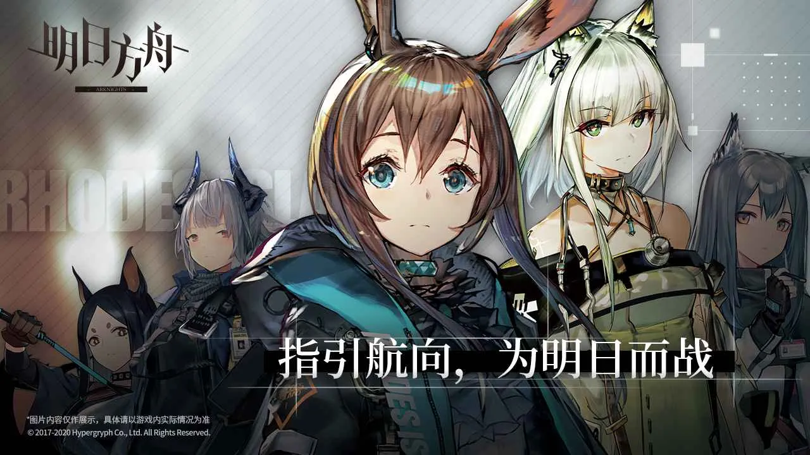
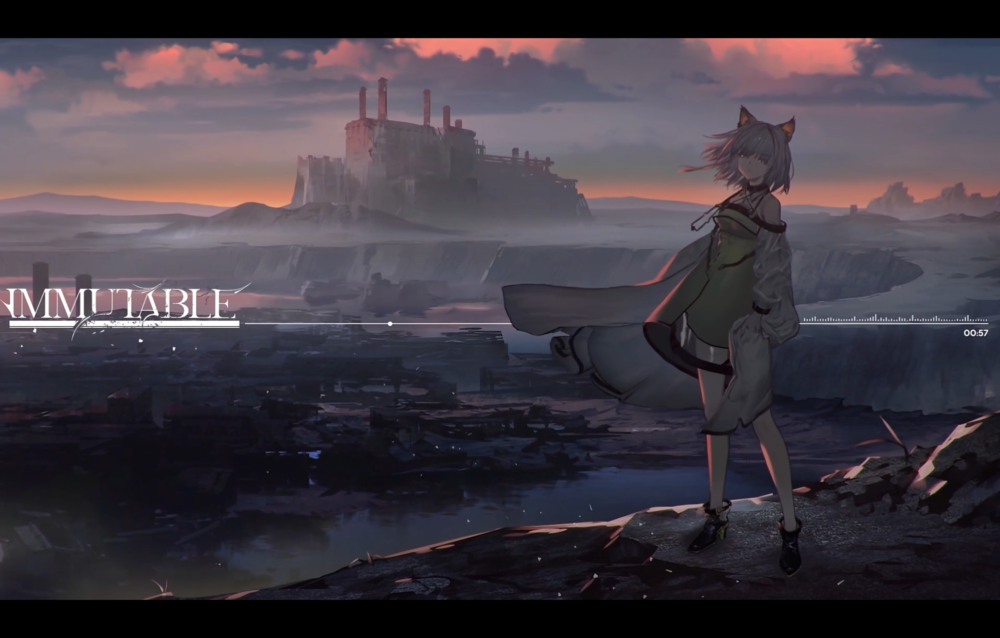

明日方舟是一款策略塔防类的手机游戏，由鹰角网络公司开发并发行。游戏以末世科幻设定为主题，玩家将扮演“博士”，带领一队名为“干员”的角色，与敌人进行战斗。
大地被起因不明的天灾四处肆虐，经由天灾席卷过的土地上出现了大量的神秘矿物——“源石”。
依赖于技术的进步，源石蕴含的能量投入工业后使得文明顺利迈入现代，与此同时，源石本身也催生出“感染者”的存在。 “感染者”是身俱力量与不幸的存在，如今他们中的一部分，妄图与源石整合为一，为大地带来新的秩序。 这场战火阴谋是我们对抗天灾遇到的新的阻碍。
你将作为罗德岛的一员，与罗德岛公开领导人阿米娅一同，雇佣人员频繁进入天灾影响后的高危地区，救助受难人群，处理矿石争端，以及对抗整合运动—— “罗德岛”的战术头脑，你准备好了吗？

玩家需要在游戏中收集和升级不同的干员，利用他们的独特技能和属性，通过策略布局来抵抗敌人的攻击。
（作为二游中少有的塔防游戏，其玩法深得我心）
2017年
1月24日 《明日方舟》制作公司上海鹰角网络科技有限公司正式成立。
6月14日 官方微博上线。
8月 早期官方推特上线。
8月15日 官方微博、微信公众号公布游戏相关信息。
9月8日 游戏概念宣传PV1「The Prelude」释出。 1
2019年
4月27日 游戏概念宣传PV2「THE OVERTURE」释出。 官方在Bilibili进行了游戏交流展示直播。
4月30日 简中版iOS区正式开服[9]。
5月1日 简中版安卓区正式开服。
4月25日 《明日方舟》一周年直播。
10月25日 《明日方舟》1.5周年「感谢庆典」直播。
2021年 3月26日 塞壬唱片官网正式开通。
4月24日 《明日方舟》二周年直播；泰拉记事社官网正式开通[17]。 4月25日 游戏概念宣传PV3「THE ECHO」释出。
7月25日 《明日方舟》「夏日嘉年华特别通讯」直播，首次在直播中使用中文配音。
9月17日 简中版开始逐步实装中文普通话语音。
10月24日 《明日方舟》2.5周年「感谢庆典」直播，首次释出独立的中文PV，同时宣布主线动画制作进行中。
2022年
1月15日 《明日方舟》「2022年春节前瞻特辑」直播。
1月25日 简中版正式实装第一批中文方言语音。
4月23日 《明日方舟》三周年直播；主线动画先导PV释出。
7月5日 简中版开始逐步实装韩文、英文语音。
7月23日 线动画先导PV2释出
8月6日 《明日方舟》「2022夏日嘉年华特别通讯」直播。
9月8日 简中版正式实装第二批中文方言语音。
7月5日 简中版开始逐步实装韩文、英文语音。
8月6日 《明日方舟》「2022夏日嘉年华特别通讯」直播。
9月8日 简中版正式实装第二批中文方言语音。
10月23日 《明日方舟》3.5周年「感谢庆典」直播。
10月29日 TV动画《明日方舟 黎明前奏》正式开播。
11月1日 简中版叙拉古阵营相关干员实装意大利语语音。
2023年
1月8日 《明日方舟》「2023新春前瞻特辑」直播。 4月22日 《明日方舟》四周年直播。
7月23日 《明日方舟》「2023夏日嘉年华特别通讯」直播。
10月7日 TV动画《明日方舟 冬隐归路》正式开播。
10月22日 《明日方舟》4.5周年「感谢庆典」直播。
11月1日 简中版莱塔尼亚阵营相关干员实装德语语音、乌萨斯阵营相关干员实装俄语语音。 11月4日 日文版、韩文版、英文版「2023感谢庆典·秋」直播[27]
作为一个塔防游戏爱好者兼剧情向游戏玩家，《明日方舟》高质量的剧情和有意思的塔防玩法深深吸引住了我。
剧情上，《明日方舟》的世界观庞大却又细致入微，剧情风格多元且内涵深刻。有充满着科学与浪漫的剧情最高杰作《孤星》，有深蕴着中式哲学与美学的《画中人》，有 闪耀着人性的光辉的《愚人号》，有展现崇高骑士精神的《长夜临光》，使《明日方舟》的剧情具有极高的评价。
孤星CG：
画中人CG：


愚人号CG：


长夜临光CG：

玩法上，《明日方舟》在不断创新，从最初只有主线与sidestory中的关卡，到第一次推出高难活动《危机合约》，再到将塔防与肉鸽模式融合而成的《集成战略》，以及各种其他模式如保全派驻，多维合作，连锁竞赛，引航者试炼，纷争演绎等，玩法多样丰富，而且将于24年春节期间推出新的常驻玩法《生息演算》。我个人是集成战略的狂热爱好者，同时也希望方舟可以推出更多的有意思的新模式！